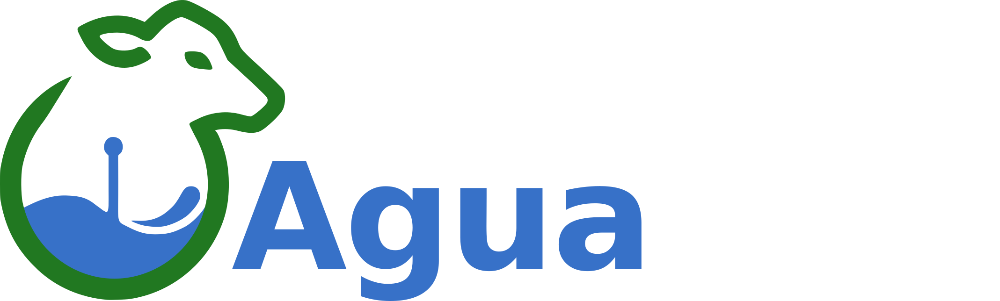

Cómo funcionael sistema
Tres pasos entre la aguada y tu celular. Sin obra, con comunicación inalámbrica y sin depender de la señal del campo.
Instalacióndel nodo
Se instala sobre el tanque, bebedero, represa o bomba.
Se monta sobre la infraestructura que ya tenés. Panel solar, batería integrada y comunicación inalámbrica: no necesita mantenimiento de energía.
Conexióncon el Gateway
El nodo se comunica de forma inalámbrica con el gateway. El gateway se conecta a internet a través de WiFi o 4G.
Un solo gateway concentra los datos de todos los nodos del campo.
Controlátodo
Desde el celular ves todos tus puntos de medición, recibís alertas y tomás decisiones con datos reales.
Estés donde estés: el mismo control que si estuvieras en el campo.
De la aguadaa tu celular
Miden nivel, temperatura, flujo, consumo y posición.
Concentra los datos de todos los nodos del campo.
Guarda el historial completo de cada punto de medición.
Mapa, alertas y decisiones con datos reales.
Te ayudamos aarmar tu sistema
Contanos cuántas aguadas tenés y te decimos qué nodos necesitás. Sin compromiso.